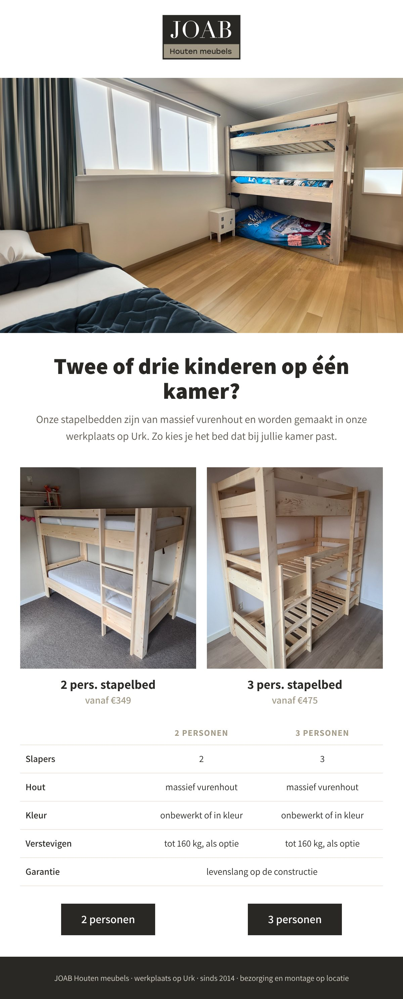
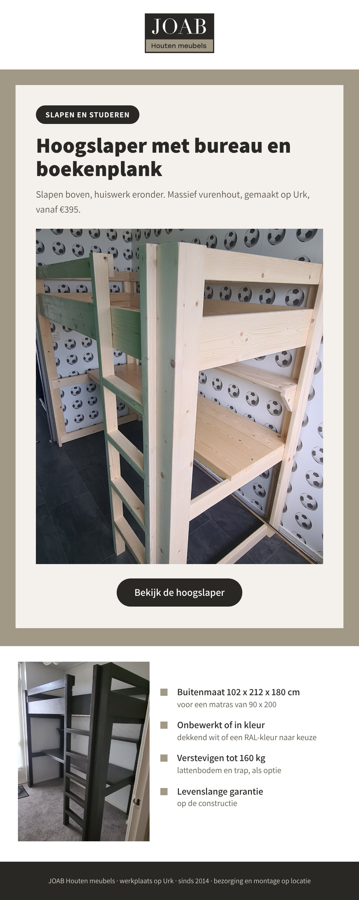

Voorbeelden voor JOAB Houten meubels
Vijf invalshoeken voor JOAB, van de kinderkamer tot de werkplaats op Urk.
Vijf advertenties en twee nieuwsbrieven, gemaakt met jullie eigen foto's en productinformatie. Een idee van Issey Kooijmans van Digital Essence; niets hiervan is gepubliceerd.
Hoi team JOAB, ik zag dat jullie sinds 2014 stapelbedden tot vier personen maken in jullie werkplaats op Urk, met levenslange garantie op de constructie. De foto's van jullie bedden in echte kinderkamers vond ik sterk, dus daar heb ik vijf advertenties en twee nieuwsbrieven van gemaakt. Niets is gepubliceerd. Past het niet, zeg het gerust.
Eerst even uitgelegd
Wat is een invalshoek?
Een invalshoek is de reden waarom iemand iets koopt. Hetzelfde stapelbed kun je op heel veel manieren verkopen, omdat niet iedereen om dezelfde reden koopt.
Hetzelfde stapelbed, vijf verschillende redenen om het te kopen. Elke reden wordt een eigen advertentie.
- 01Probleem → oplossing"Hoe krijg ik drie kinderen op één kamer?"
- 02Varianten"Past dat bed wel bij onze kamer?"
- 03Kenmerken-checklist"Is het stevig genoeg voor kinderen die erop klimmen?"
- 04Hoe het werkt"Hoe werkt dat, bestellen bij een werkplaats?"
- 05Zekerheid"Wat als er na een paar jaar iets mis is?"
We testen die invalshoeken naast elkaar. Na een paar dagen zie je welke het meest verkoopt. Daar maken we er meer van, en wat niet werkt, gaat eruit.
Zo werk ik
Van eerste blik tot bestelling.
Niet iedereen die een advertentie ziet, is meteen klaar om te kopen. Daarom maak ik voor elke stap andere advertenties. Zo spreek je iedereen aan op het moment waar hij of zij zit.
- Stap 1 · Top of funnel
Kennismaken
Mensen die JOAB Houten meubels nog nooit hebben gezien.
Doel: dat ze stoppen met scrollen en nieuwsgierig worden.
Zoals een etalage: je loopt langs en kijkt even naar binnen.
- Stap 2 · Middle of funnel
Overtuigen
Mensen die jullie al eens zagen, maar nog twijfelen.
Doel: hun vragen beantwoorden. Wat is het, waarom dit en niet iets anders?
Zoals een verkoper die rustig uitlegt wat het verschil is.
- Stap 3 · Bottom of funnel
Kopen
Mensen die bijna willen bestellen.
Doel: het laatste duwtje, zoals een aanbod, reviews of de zekerheid van gratis retour.
Zoals de kassa: duidelijk, makkelijk en zonder risico.
Wat ik zag: in de advertentiebibliotheek van Meta vond ik geen advertenties van JOAB. Ouders die een stapelbed zoeken, scrollen nu langs merken als PETIT PUK. Met elke week een nieuwe invalshoek kom je daar tussen te staan.
Advertenties · 9:16
Vijf advertenties, verdeeld over de stappen.
Tik op een advertentie om hem groot te bekijken.
Voor mensen die JOAB Houten meubels nog niet kennen.
Voor mensen die jullie kennen, maar nog twijfelen.
Voor wie bijna bestelt.
Waarom advertenties
Zo groeien interieurmerken op Instagram.
Ouders zoeken een stapelbed vaak niet via Google, maar zien het voorbijkomen tijdens het scrollen. Merken die daar elke week nieuwe invalshoeken testen, vinden steeds nieuwe kopers en houden hun kosten per aankoop laag. Een nieuwsbrief zorgt dat mensen die nog twijfelen terugkomen als de kinderen groter worden.
Aantal advertenties: Meta Advertentiebibliotheek, 23-11-2026.
Nieuwsbrief 1 van 2 · Vergelijking
Twee of drie kinderen op één kamer?
Op de site is nog geen nieuwsbriefaanmelding. Met een eenvoudige aanmelding kan deze mail ouders helpen kiezen tussen het stapelbed voor twee en voor drie, met een vergelijkingstabel.
- Een echte kinderkamer als openingsfoto
- 2 pers. en 3 pers. stapelbed naast elkaar, met prijs
- Tabel met hout, kleur, verstevigen en garantie

Nieuwsbrief 2 van 2 · Productspotlight
Hoogslaper met bureau en boekenplank
Een mail over één product: de hoogslaper met bureau. Groot beeld, één duidelijke knop en daaronder de maten en opties.
- Claim: slapen en studeren in één
- Groot beeld van het bed in een echte kamer
- Maten, kleuren, verstevigen en garantie

Ritme
Zo kan een week eruitzien.
Dit is een voorbeeld, geen vast pakket. De kracht zit in het ritme: regelmatig nieuwe invalshoeken testen in elke stap, en je nieuwsbrief vast versturen. Wat werkt, doen we vaker.
- MaNieuwe advertenties liveNieuwe invalshoeken in elke stap tegelijk testen.
- DiMeekijkenWelke invalshoek pakt de doelgroep op?
- WoBijsturenBudget naar wat werkt, de rest eruit.
- DoNieuwsbrief verstuurdVast moment, zodat lezers erop gaan rekenen.
- VrKorte updateWat werkte en wat we volgende week doen.
Benieuwd hoe dit voor JOAB Houten meubels werkt?
Een kwartiertje bellen is genoeg om te kijken of het past. Geen verplichtingen.